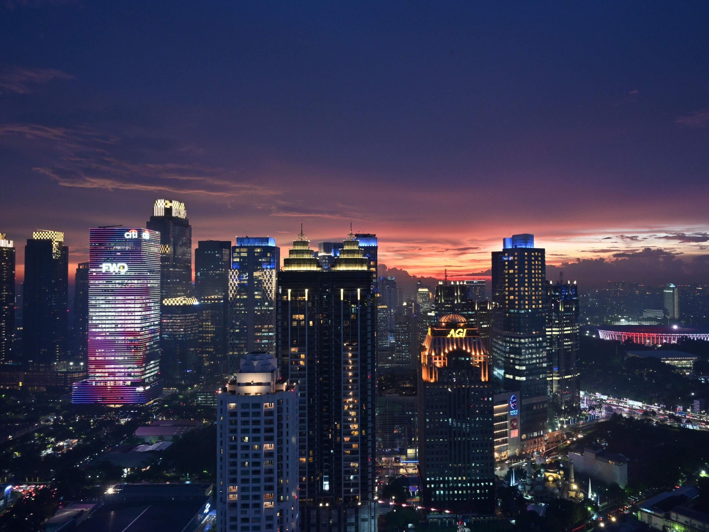
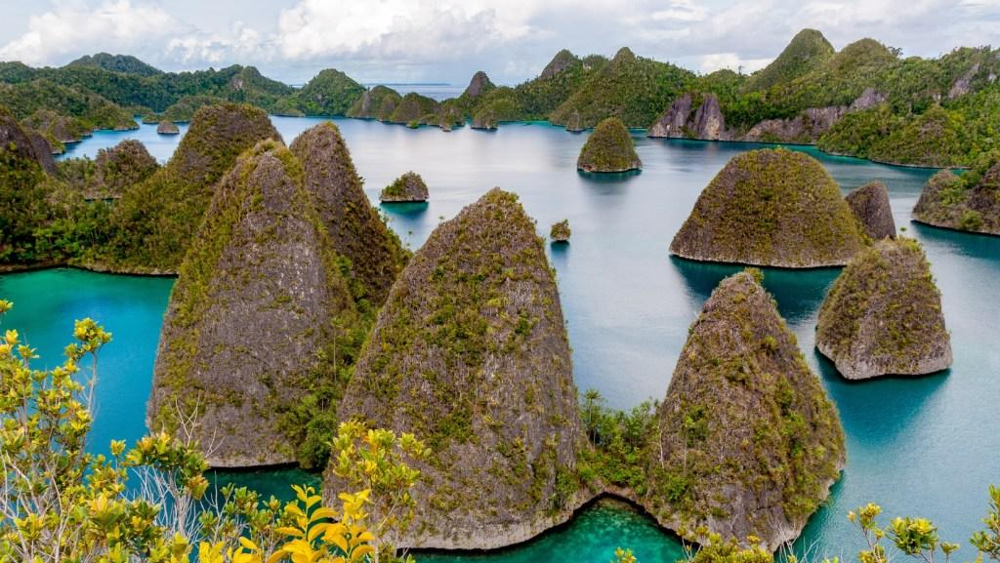
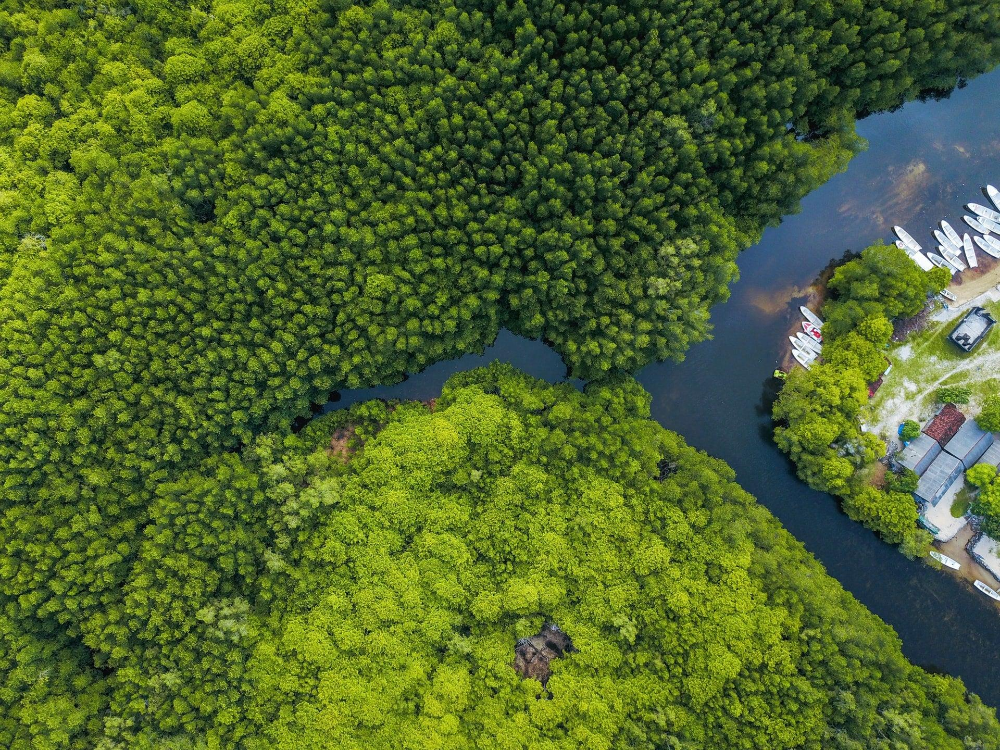

A Indonésia é um país localizado no Sudeste Asiático, formado por um vasto arquipélago com mais de 17 mil ilhas distribuídas entre os oceanos Índico e Pacífico.
Com uma população superior a 270 milhões de habitantes, é um dos países mais populosos do mundo, apresentando grande diversidade de povos, línguas e culturas.
Sua capital é Jacarta, um importante centro econômico, político e cultural da região.
A geografia do país é marcada por intensa atividade vulcânica, pois está localizado no “Anel de Fogo do Pacífico”, possuindo diversos vulcões ativos e relevo predominantemente montanhoso.
O clima é equatorial, com altas temperaturas e elevada umidade ao longo do ano, além de florestas tropicais que abrigam uma das maiores biodiversidades do planeta.
A cultura indonésia é extremamente rica e diversificada, com mais de 300 grupos étnicos, além de manifestações como danças típicas, o batik e o teatro de sombras wayang kulit.
A religião exerce forte influência na sociedade, com predominância do islamismo, mas também com presença do hinduísmo, budismo e cristianismo.
A economia da Indonésia é uma das maiores do Sudeste Asiático, baseada em atividades como agricultura, indústria, turismo e exploração de recursos naturais.
O turismo é um setor importante, com destaque para destinos como Bali, conhecido por suas paisagens, cultura e atrações naturais.
Apesar de seu crescimento, o país enfrenta desafios como desigualdade social, infraestrutura limitada em algumas regiões e riscos de desastres naturais.
De modo geral, a Indonésia é uma nação dinâmica, diversa e estratégica, com grande relevância no cenário global.

cidades grandes

Natureza e diversidade

Natureza e diversidade